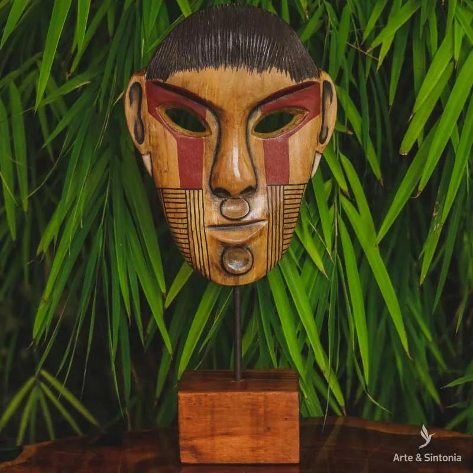
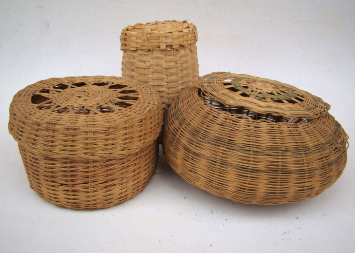
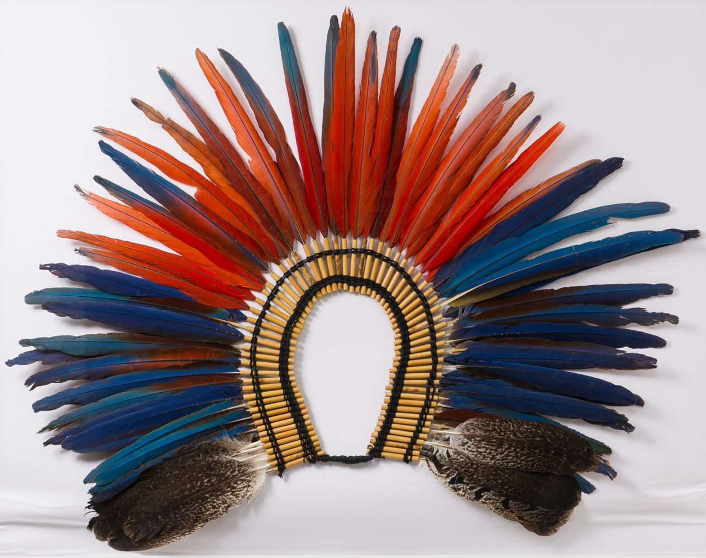
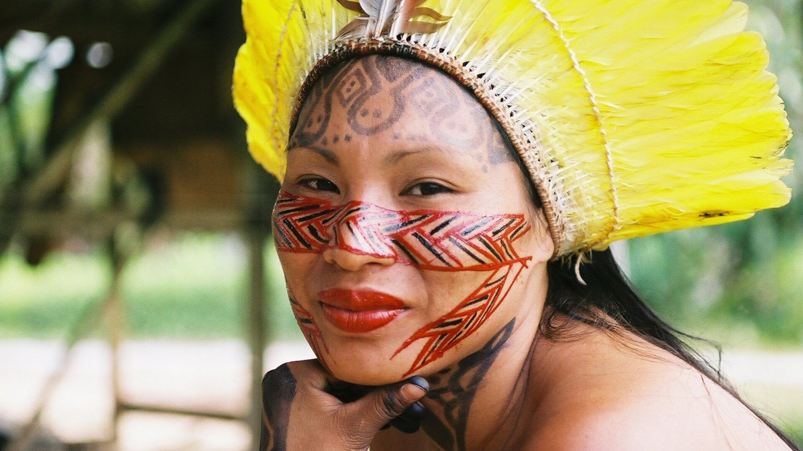

Arte Indígena Brasileira
Maria Eduarda 2ºBII
A arte indígena brasileira é composta por tudo que é produzido pelas etnias indígenas do país e representa a cultura e a tradição desses povos. Sendo muito rica e composta por diversos elementos carregados de simbologias antigas. As produções indígenas mais comuns à maioria das etnias brasileiras são: cerâmica, pintura corporal, máscaras e a arte plumaria
Cerâmica
A cerâmica é um dos materiais mais utilizados pelos indígenas, provavelmente devido à versatilidade do material. Produzido pelos indígenas - quase sempre pelas mulheres - a partir de uma mistura feita de barro e de outros insumos naturais. Depois de prontos, os objetos são aquecidos para que se tornem mais resistentes.
Cerâmica Marajoara
Sendo considerada uma das produções de cerâmica mais antigas do país e ainda hoje os indígenas desta região mantêm a cultura da produção da cerâmica Marajoara

Caracterizadas pelo uso frequente de pinturas com relevo em cores quentes e terrosas.
Máscaras
As máscaras são uma parte importante da cultura indígena, sendo usada em rituais e festividades. O uso e a produção das máscaras é carregado de simbologias e esses objetos podem representar seres sobrenaturais e antepassados, considerados os maiores detentores de sabedoria do povo indígena.
Cestaria
Eram inicialmente utilizados para armazenamento e transporte principalmente de alimentos. Feitos a partir de matérias naturais, como palha, junco e folha de palmeiras.
Arte Plumária
Produzida com plumas e penas de diversos animais. Sendo bastante antiga , mas ainda cultuada pelos indígenas .
Os objetos de arte plumária são feitos principalmente para uso como adornos usados em adereços usados em momentos de festividades ou em rituais de luta.
Pintura Corporal
A pintura corporal é utilizada pelos indígenas em momentos especiais, como na prática de rituais e de celebrações e varia de acordo com as ocasiões. Cada etnia indígena possui um tipo específico de pintura, que é representativa e identifica as características da tribo.
